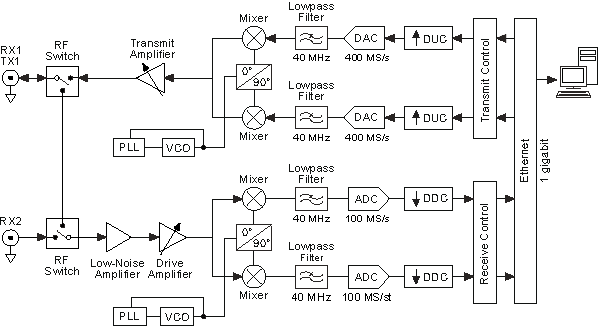
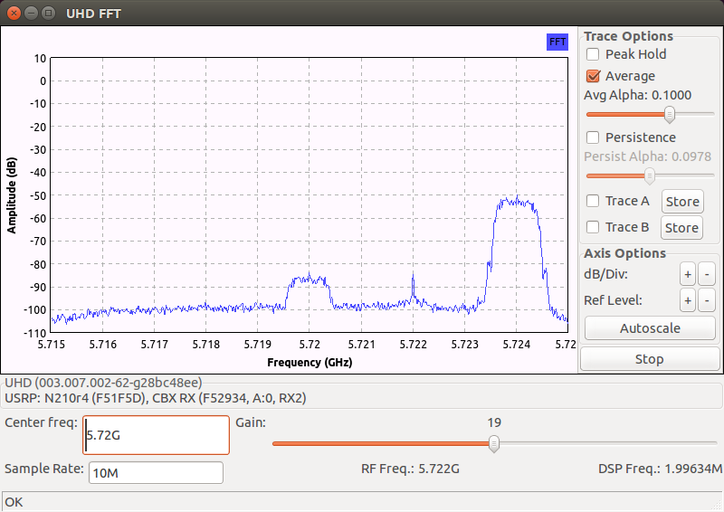

5.1. Frequency Tuning#
The following diagram from Ettus shows the radio architecture of the N210 USRP with the SBX/CBX daughterboard:
Dig deeper
For specific implementation details, one can refer to the schematics of the N210 motherboard, SBX, and CBX daughterboards.
This architecture allows both direct-conversion and low-IF (superheterodyne with a low IF which is digitally implemented) transceiver implementations, depending on the frequency tuning setting. Three methods of tuning the oscillator frequency are supported:
{kind=link}
5.1.1. Automatic “direct-conversion” tuning#
As a matter of fact, this is actually a two-stage tuning process. The VCO in the daughterboard is tuned to as close to the target frequency as possible. The remaining difference is digitally corrected by the CORDIC in the FPGA on the motherboard.
Strictly speaking, this is a low-IF implementation. Nevertheless the difference between the target frequency and the actual VCO frequency is often small because the VCO, by default using fractional-N tuning, has fine frequency steps. The resulting IF is very close to DC. Hence, the implementation may be approximated as direct conversion.
To employ this method of tuning in UHD, we just need to provide the target frequency as an input argument to the class methods
uhd::usrp::multi_usrp::set_tx_freq()anduhd::usrp::multi_usrp::set_rx_freq(). Or we may provide the target frequency as the only input argument to the constructor of auhd::tune_request_tclass object and then pass it touhd::usrp::multi_usrp::set_tx_freq()anduhd::usrp::multi_usrp::set_rx_freq():double target_freq = 2.412e9; uhd::usrp::multi_usrp::sptr usrp = uhd::usrp::multi_usrp::make(""); //Either uhd::tune_result_t tx_tune_result = usrp->set_tx_freq(target_freq); uhd::tune_result_t rx_tune_result = usrp->set_rx_freq(target_freq); // or uhd::tune_request_t tune_req(target_freq); uhd::tune_result_t tx_tune_result = usrp->set_tx_freq(tune_req); uhd::tune_result_t rx_tune_result = usrp->set_rx_freq(tune_req);
We may use the class methods
uhd::usrp::multi_usrp::get_tx_freq()anduhd::usrp::multi_usrp::get_rx_freq()to query the actual TX and RX frequencies that are set to after issuinguhd::usrp::multi_usrp::set_tx_freq()anduhd::usrp::multi_usrp::set_rx_freq(), respectively. To obtain detailed tuning information, we may query theuhd::tune_result_tobjects returned above by using the pretty print string class methoduhd::tune_result_t ::to_pp_string():std::cout << tx_tune_result.to_pp_string(); std::cout << rx_tune_result.to_pp_string();
or by accessing their members
target_dsp_freq,target_rf_freq,actual_dsp_freq, andactual_rf_freqdirectly.
5.1.2. Automatic low-IF tuning#
This method is similar to automatic direct-conversion tuning discussed above, except that we explicitly specify the IF frequency in a second argument to the constructor of the
uhd::tune_request_tobject:uhd::tune_request_t tune_req(target_freq, IF_freq);
With this specification, the VCO in the daughterboard will be tuned to as close to
target_freq + IF_freqas possible. As a result, the RX signal will be mixed down to IF and then sampled. The CORDIC in the FPGA then performs IF processing and mixes the IF signal down to baseband. The tuning process is simply the opposite on the TX side.Since the sampling rate of the ADCs on the N210 motherboard is 100 MHz, the IF frequency can only ranges from \(-50\) MHz to \(50\) MHz with a positive (negative)
IF_freqcorresponding to up- (down-) conversion.As in any superheterodyne RX architecture, low-IF tuning suffers from the problem of image. The image occurs at
target_freq + 2*IF_freq. While neither is the SBX nor CBX daughterboard equipped with an image rejection filter before the RF mixer, the complex baseband implementation of the IF stage in the FPGA implicitly provides image suppression equivalent to the Hartley architecture (see [1]). However, due to the problem of IQ imbalance (see next section), the image suppression ability resulted is suboptimal. For example, see the captured RX spectrum below:where the
target_freqandIF_freqare set to \(5.720\) GHz and \(2\) MHz, respectively. The TX signal centered at \(5.724\) GHz acts as an image in this case. Notice that the image is mixed into the IF band and then mixed down to the baseband (shown as centered attarget_freq). The equivalent Hartley architecture provides about a \(35\) dB image suppression performance. The spike shown at \(5.722\) GHz is due to the VCO (LO) leakage (see next section).
{kind=link}
5.1.3. Manual tuning#
We may also manually specify the target VCO and CORDIC frequencies by setting the relevant members in the
uhd::tune_request_tclass object to the desired values. There could be a number of possible setting combinations and the details can be deduced from the UHD manual. Below is a typical example that sets the VCO frequency is set to the allowable value closest totarget_freq+IF_freqand send IF signal samples back to the host computer, provided the sampling rate is set high enough:uhd::tune_request_t rx_tune_req(); rx_tune_req.rf_freq_policy = uhd::tune_request_t::POLICY_MANUAL; rx_tune_req.rf_freq = target_freq+IF_freq; rx_tune_req.dsp_freq_policy = uhd::tune_request_t::POLICY_MANUAL; rx_tune_req.dsp_freq = 0.0;